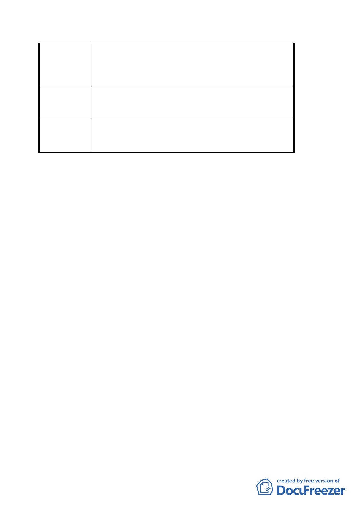

基地位置為本區精華地段及內湖捷運第二出口，又本
位置之建築物為五樓及七樓，房屋已老舊，因本身地
質軟弱，並經歷 921 地震後，房屋室內牆壁四處龜裂
且嚴重傾斜，不宜居住，重建勢在必行。
考量都市整體美觀及經濟價值，建議以「聯合開發」
建 議 辦 法 方式辦理較具時效；否則則以 92 年 12 月 23 日公展之
「都市更新地區計畫案」辦理。
同意捷運局提案，徵收內湖區康寧段三小段一八○地
委員會決議 號土地，供設置內湖站第二出入口及其相關設施，唯
請捷運局對鄰近建物安全應予以考量，納入設計參考。
討論事項二
案名：變更臺北市萬華區直興段三小段四０五－五地號、四０
五－六地號部分第四種商業區土地暨四六五地號部分
市場用地為道路用地計畫案
說明：
一、本件係市府以九十三年四月十九日府都規字第０九三０五
一四三八０三號函送到會，並自九十三年四月十九日起公
開展覽三十天。
二、法令依據：都市計畫法第二十七條第一項第二、三款。
三、變更位置：詳位置圖所示。
四、變更理由及內容：詳計畫書。
五、說明會日期：九十三年五月三日
六、公民或團體所提意見：如后附綜理表。
決議：
一、本案照案通過。另有關直興市場改建及攤商安置之時程，
請市府根據需求儘速處理。
二、公民或團體所提意見審決如后附綜理表。
第 5 頁，共 9 頁